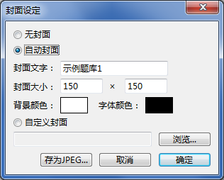
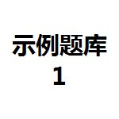
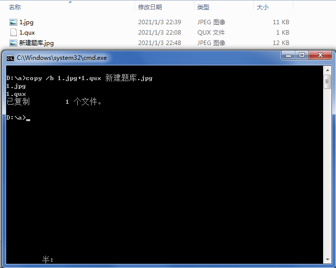

题库封面
题库封面
设置题库封面后，可以将题库封装在jpeg图片中。

 | 切勿使用任何图像编辑软件对封装好的题库进行编辑或压缩，否则极易丢失题库信息！！！ |
|---|
删除所有的封面信息，且题库不可保存为带封面的题库文件。
生成默认格式的封面，可设定的内容包括：
-
封面文字：用于标识题库名称，长度不限，但可能受限于区域大小而无法全部显示，一般最多可显示20个汉字。
-
封面大小：jpeg图的像素值。（建议长宽均大于50像素，否则可能字迹不清）。
-
背景颜色/字体颜色：支持24位真彩色。
生成的封面样例如下（下图实际为题库，下载后可在QuickQuiz中打开）：

| 将带有自动封面题库保存为不带封面题库时，自动封面信息仍然保留。 |
|---|
导入您喜欢的jpeg图片作为题库封面。
| 将带有自定义封面题库保存为不带封面题库时，自定义封面图将丢失。 |
|---|
您也可以不借助本应用程序，手动将现有的无封面标准题库文件或无封面兼容题库文件加上封面。
- 将需要添加封面的题库文件（例如1.qux，必须不带封面）与封面图片（例如1.jpg，必须为jpeg/jpg格式）放在同一路径下（例如D:\a）；
- 打开命令提示符，并进入D:\a路径；
- 执行命令“copy /b 1.qux+1.jpg 新建题库.jpg”（注意顺序不能错，否则将看不到封面）；
- 最终在D:\a路径下获取添加封面的题库“新建题库.jpg”，可在QuickQuiz中打开。

| 如非必要，仍建议使用QuickQuiz对题库封面进行管理。
即使在执行上述命令时将jpg封面和qux文件的顺序弄反，最终生成的题库仍然可以读取。 |
|---|
GX Software 2020-2021
V2.0